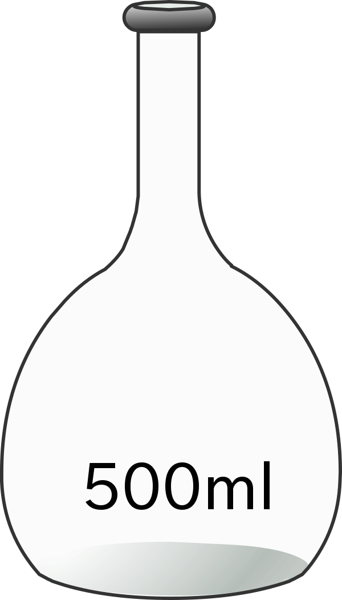

×
गाइड
- पांच 1 × 10 तैयार करें-5सॉल्वैंट्स में एम Coumarin-138 समाधान: साइक्लोहेक्सेन, डाइऑक्साने, एसिटोनिट्राइल, एथिल अल्कोहल और एथिलीन ग्लाइकॉल। इस तरह के पतला समाधान 1 × 10 से कमजोर पड़ने के माध्यम से तैयार किए जा सकते हैं-4संबंधित सॉल्वैंट्स में एम स्टॉक समाधान। यहां विभिन्न सॉल्वैंट्स में समाधान एक विलायक चयन बार पर दिखाए जाते हैं।
- सभी समाधानों के साथ अवशोषण माप एक के बाद एक इस प्रकार किया जाता है।
- एक विशेष समाधान लेने के लिए, विलायक चयन पट्टी पर उपयुक्त विलायक पर क्लिक करें और फिर समाधान युक्त वॉल्यूम फ्लास्क पर क्लिक करें।
- इसे इंस्ट्रूमेंट टेबल पर ले जाने के लिए क्वार्ट्ज क्युवेट (पथ की लंबाई, 1 सेमी × 1 सेमी) पर क्लिक करें।
- प्रायोगिक समाधान के लगभग 3 एमएल इकट्ठा करने के लिए ग्लास पाश्चर विंदुक पर क्लिक करें जिसे क्वार्ट्ज क्यूवेट में स्थानांतरित किया जाएगा।
- इसमें समाधान निकालने के लिए पिपेट पर क्लिक करें।
- इसे वॉल्यूमेट्रिक फ्लास्क से बाहर निकालने के लिए पिपेट पर क्लिक करें।
- समाधान को cuvette में स्थानांतरित करने के लिए फिर से पिपेट पर क्लिक करें। अवशोषण वर्णक्रमीय स्कैन शुरू करें, पॉप-अप “प्रारंभ अवशोषण माप” पर क्लिक करें।
- पावर बटन पर क्लिक करके स्पेक्ट्रोफोटोमीटर चालू करें। असली ऑपरेशन में, यह लगभग लगता है। साधन के प्रारंभ के लिए 30 मि।
- सेल-धारक में नमूना रखने के लिए ढक्कन पर क्लिक करके स्पेक्ट्रोफोटोमीटर के नमूना कक्ष का ढक्कन खोलें। नमूना धारक में रखने के लिए क्युवेट पर क्लिक करें। इस माप में नमूना रिक्त या संदर्भ के रूप में शुद्ध विलायक का उपयोग करना होता है। यहाँ एक डबल बीम स्पेक्ट्रोफोटोमीटर दिखाया गया है।
- उस पर क्लिक करके नमूना कक्ष का ढक्कन बंद करें।
- कंप्यूटर मॉनिटर पर अवशोषण माप आइकन पर क्लिक करके माप सेट-अप स्क्रीन खोलें।
- स्क्रीन पर, तरंग दैर्ध्य रेंज दर्ज करें। प्रारंभ: 430 एनएम अंत: 275 एनएम। वास्तविक ऑपरेशन में, नमूना के लिए घटना प्रकाश की तरंग दैर्ध्य सीमा को चुना जाता है और तरंग दैर्ध्य स्कैन कंप्यूटर सॉफ्टवेयर के माध्यम से चलाया जाता है। एक स्कैन को एब्जॉर्बेंस (ए) या ट्रांसमिटेंस (% टी) मोड में चला सकता है।
- तरंग दैर्ध्य स्कैन को चलाने के लिए माप सेट-अप स्क्रीन पर हरे रंग के प्रारंभ बटन पर क्लिक करें। तरंग दैर्ध्य स्कैन का निरीक्षण करें।
- स्पेक्ट्रल स्कैन पूरा होने पर क्लोज बटन पर क्लिक करें। वास्तविक ऑपरेशन में, स्कैन डेटा को कंप्यूटर में संग्रहीत किया जाता है। उपकरण डेटा संग्रहीत करता है और इसलिए नमूना फ़ाइल नाम के लिए पूछता है। डेटा सहेजने के लिए एक फ़ाइल नाम दर्ज करता है।
- नमूना कक्ष से क्युवेट को बाहर निकालने के लिए, पहले इसे खोलने के लिए नमूना कक्ष के ढक्कन पर क्लिक करें और फिर इसे बंद करने के लिए नमूना कक्ष के ढक्कन पर क्लिक करें।
- माप पर प्रारंभ करने के लिए रीसेट बटन पर क्लिक करें।
- सभी सॉल्वैंट्स के साथ अवशोषण माप दोहराएं पहले विलायक चयन बार पर और फिर समाधान युक्त वॉल्यूमेट्रिक फ्लास्क पर क्लिक करके।
- डेटा टैब पर क्लिक करके सभी डेटा एकत्र करें।
- अलग-अलग सॉल्वैंट्स के साथ यूवी-दृश्य अवशोषण स्पेक्ट्रा की जांच करें।
- सभी सॉल्वैंट्स के लिए अधिकतम अवशोषण तरंगदैर्ध्य और इसी अवशोषण मूल्यों का पता लगाएं और उन्हें विलायक ढांकता हुआ स्थिरांक और अपवर्तक सूचक मूल्यों के साथ सारणीबद्ध करें।
- क्या विलायक ध्रुवता और अधिकतम अवशोषण की तरंग दैर्ध्य के बीच कोई संबंध या प्रवृत्ति है?
- अपनी टिप्पणियों पर चर्चा करें।

